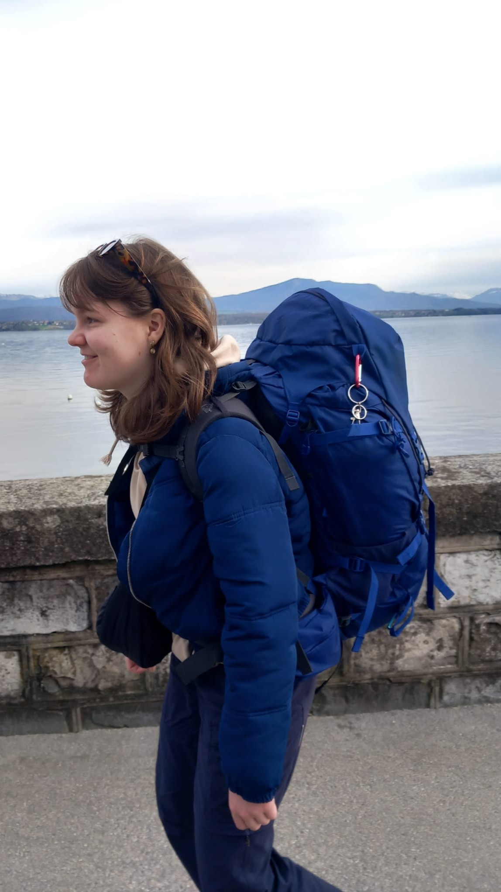

About me
I am Birgit van den Eijnden, studying Liberal Arts and Sciences at University College Utrecht and Physics and Astronomy at Utrecht University. University College Utrecht is an Interdisciplinary College that has allowed me to explore my interests in physics, molecular cell biology, environmental sciences and anthropology. My interest in environmentalism has led me to follow the summer course on GIS, which has allowed me to gain hands on experience with Geographical Information Systems and its many applications.